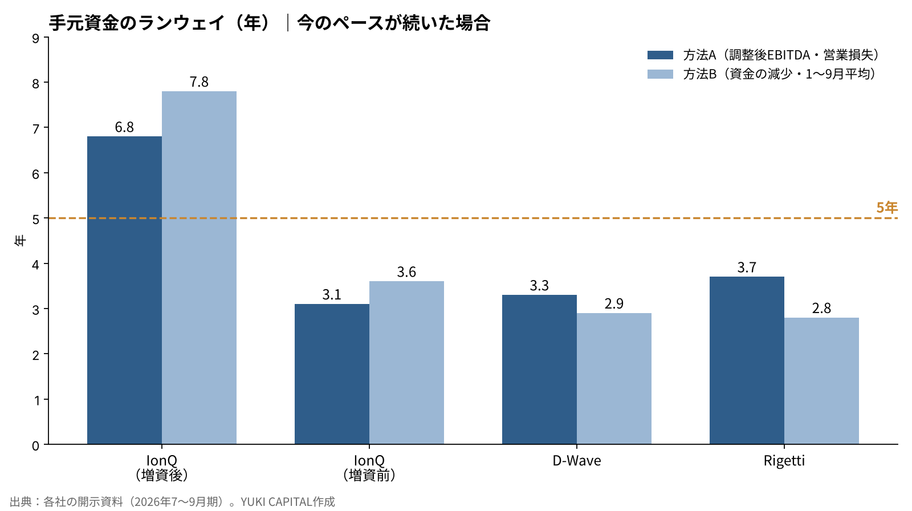
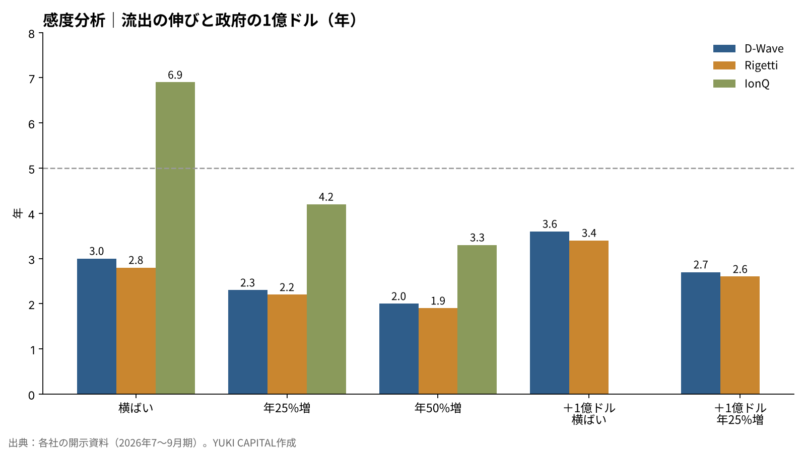

量子コンピュータ3社の手元資金は、今の赤字のペースで何年もつのか――IonQ・D-Wave・Rigettiの7〜9月期で試算する
量子コンピュータの上場3社が、11月上旬に7〜9月期の決算を出した。IonQの売上高は前の年の4倍を超えたが、D-WaveとRigettiの売上高は四半期で数百万ドルにとどまる[1][2][5]。
3社とも、本業ではまだ現金を生んでいない。赤字の会社を見るときに先に確かめたいのは、黒字になる時期よりも、手元の現金で何年走れるかである。
本稿の問いは、3社の手元資金が、今の赤字のペースが続いたとして何年もつのかである。
- 今のペースでは、D-WaveとRigettiの手元資金はおよそ2.8〜3.7年分で、5年には届かない。
- IonQは10月の約20億ドルの増資を含めると約36.5億ドルで、6.8〜7.8年分ある。増資の前の残高だけなら3.1〜3.6年分だった。
- 赤字が年25%ずつ増えると、D-WaveとRigettiは2.2〜2.3年まで縮む。米商務省の最大1億ドルの支援は、1社あたり0.6年ほどを足す計算になる。

問いと背景
量子コンピュータとは、量子ビット（0と1を重ね合わせた状態をとれる情報の単位）を使って計算する機械である。3社は方式が違う。IonQは電場で捕まえたイオンを使うイオントラップ方式、Rigettiは超伝導の回路を使う方式をとる。D-Waveは最適化の問題を解く量子アニーリング方式を主力にしながら、超伝導のゲート方式も開発している。
本稿でいう「ランウェイ」とは、手元の現金・預金・有価証券の合計を、1年あたりの資金の流出額で割った年数を指す。会社が新しくお金を集めずに事業を続けられる期間の目安である。
この問いが今重要なのは、量子への需要が、言葉ではなく期限として見え始めたからだ。米国立標準技術研究所（NIST）は10月27日、量子コンピュータに破られうる暗号（RSAや楕円曲線暗号）を2030年より後は非推奨とし、2035年より後は使用を認めないとする移行計画の最終版を出した[6]。Googleの研究者クレイグ・ギドニー氏は2025年の論文で、RSA-2048という暗号を、100万個未満のノイズのある量子ビットで1週間足らずで解けるとの見積もりを示した[7]。守る側の準備にも、破る側の技術にも、年号が付き始めている。
ただし、需要が育つ前に会社の現金が尽きれば、株主はその果実を受け取れない。新しく株を出して資金を集めれば、1株あたりの持分は薄まる。だから、需要の期限と並べて、会社の現金の期限を数字で見ておく意味がある。
データと方法
使った数字は、各社が米証券取引委員会（SEC）に出した開示資料と決算の発表である[1][2][3][4][5]。手元資金は、現金と、短期・長期の投資（有価証券）を足した額とした。借入はRigettiが無く、D-WaveとIonQも本稿の計算では差し引いていない。
資金の流出は2つの方法で見た。方法Aは、調整後EBITDA損失を4倍して年に直す。調整後EBITDAとは、利息・税金・減価償却・株式による報酬などを除いた、本業の損益のことである。方法Bは、前の四半期末から手元資金が減った額を4倍する。方法Bには設備投資が入るが、前受金の入金なども混ざる。
IonQは10月に増資を終え、7〜9月には半導体の受託製造会社SkyWaterの買収も入ったため、残高の差は使えない。代わりに、1〜9月の調整後EBITDA損失3.506億ドルを年に直した値を方法Bとした[1]。Rigettiは調整後EBITDAを出していないので、営業損失を方法Aに使った。営業損失には現金を伴わない株式報酬が入るため、流出を大きめに見積もる側に寄る。
式は「ランウェイ（年）＝手元資金÷年間の流出額」である。
| 会社 | 手元資金（9月末） | 四半期の流出 | 年に直した流出 | ランウェイ |
|---|---|---|---|---|
| IonQ（増資後） | 約36.5億ドル | A 1.336億ドル／B 1〜9月の平均 | 5.34億／4.68億ドル | 6.8年／7.8年 |
| IonQ（増資前） | 16.6億ドル | 同上 | 5.34億／4.68億ドル | 3.1年／3.6年 |
| D-Wave | 5.034億ドル | A 0.377億ドル／B 0.428億ドル | 1.51億／1.71億ドル | 3.3年／2.9年 |
| Rigetti | 4.971億ドル | A 0.332億ドル（営業損失）／B 0.442億ドル | 1.33億／1.77億ドル | 3.7年／2.8年 |
結果
今のペースのままなら、D-Waveの手元資金は2.9〜3.3年分、Rigettiは2.8〜3.7年分になる。D-Waveの手元資金は6月末の5.462億ドルから9月末の5.034億ドルへ、3か月で4,280万ドル減った[2][3]。Rigettiは6月末の5.413億ドルから4.971億ドルへ、4,420万ドル減った[4][5]。2社とも、四半期にほぼ4,000万ドル台の速さで現金が出ていっている。
IonQは、9月末の残高だけなら16.6億ドルで、方法Aでは3.1年分だった。10月16日に締めた約20億ドルの増資を足すと約36.5億ドルになり、6.8〜7.8年分まで延びる[1]。IonQの7〜9月の売上高は1.738億ドルで、そのうち8,350万ドルは買収したSkyWaterの受託製造の売上である[1]。


3社を並べると、手元資金の額は似ていても、走れる年数を決めているのは流出の速さだと分かる。D-WaveとRigettiは手元資金が約5億ドルで同じ規模だが、方法による差が大きい。設備投資や運転資金の動きが、四半期ごとの現金の減り方を揺らしている。
感度分析
今のペースが続くという前提を動かした。赤字が毎年同じ額のまま、年25%ずつ増える、年50%ずつ増える、の3通りに、米商務省からの最大1億ドルの資金が入る場合を重ねた。D-WaveとRigettiの流出には、保守的な方法Bを使った。
| 会社 | 流出が横ばい | 年25%増 | 年50%増 | ＋1億ドル（横ばい） | ＋1億ドル（年25%増） |
|---|---|---|---|---|---|
| IonQ（増資後） | 6.9年 | 4.2年 | 3.3年 | — | — |
| IonQ（増資前） | 3.2年 | 2.4年 | 2.1年 | — | — |
| D-Wave | 3.0年 | 2.3年 | 2.0年 | 3.6年 | 2.7年 |
| Rigetti | 2.8年 | 2.2年 | 1.9年 | 3.4年 | 2.6年 |

流出が年25%ずつ増えるだけで、D-WaveとRigettiのランウェイは2年台の前半に縮む。商務省の資金は、Rigettiが9月に正式に結んだ最大1億ドルの研究開発の支援で、D-Waveも同じ規模の契約を結んだ[2][8]。どちらも政府が少数株主の持分を受け取る形で、手元資金に1億ドルを足しても、ランウェイの延びは0.6年ほどにとどまる。
考察
反対の見方は2つある。1つ目は、売上が伸びれば流出は減るという見方だ。D-Waveは10〜12月に装置の出荷が重なり、年間の売上の大半がこの四半期に入るとしている[3]。Rigettiもインドの研究機関C-DACから受けた108量子ビットの装置の売上840万ドルを、10〜12月に計上する見込みである[4]。ただ、どちらも四半期の流出4,000万ドル台と比べると規模が小さく、ランウェイを年単位で延ばすほどではない。
2つ目は、株価が高いうちは、増資でいつでも資金を集められるという見方だ。IonQの20億ドルの増資は、その実例である。この見方に立てば、ランウェイは会社の寿命ではなく、株主の持分が薄まらずに済む期間と読むべきだろう。本稿の数字も、その意味で読むのが正確である。
限界もある。使ったのは四半期1回分のデータで、方法Aには設備投資が入らない。Rigettiの営業損失には現金を伴わない費用が含まれ、方法Bには前受金の入金が混ざる。IonQは受託製造という別の事業を抱えたため、量子の事業だけの流出は分けて見られない。
答え合わせの基準は3つ置ける。10〜12月期の末に、D-Waveの手元資金が4.6億ドルを、Rigettiが4.5億ドルを下回るか。IonQの調整後EBITDA損失が、四半期で1.5億ドルを超えるか。そして、商務省の資金が実際にいつ、いくら入るかである。
結論
今の赤字のペースが続けば、D-WaveとRigettiの手元資金はおよそ3年前後で、5年には届かない。IonQは増資を含めて約7年分あるが、増資の前なら3年台だった。流出が年25%ずつ増えれば、2社は2年台の前半まで縮み、政府の1億ドルが入っても0.6年ほどしか延びない。3社の手元資金は、量子の需要に年号が付き始めた2030年前後まで、増資か売上の伸びなしには届かない計算になる。
僕はこう見ている
僕はIonQを2,500株、D-WaveとRigettiを1,500株ずつ持っている。3社とも赤字で、増資を心配する声が多いことは知っている。手元の資金については、5年もてばいいと思ってきた。今回の計算では、D-WaveとRigettiは今のペースで3年前後だった。5年との差の2年分は、売上の伸びか、政府の資金か、新しい増資で埋まることになる。
それでも、量子の必要性は思っていたより早く高まっていると見ている。政府系の受注が増え、今年の10月と11月にはサイバーの問題が続いた。AIの次は量子だと思っている。7〜9月期の決算を見ても、特に何も思わなかった。
出典
- IonQ, Inc., 「Form 8-K Exhibit 99.1: Third Quarter 2026 Financial Results」, 2026-11-05 https://www.sec.gov/Archives/edgar/data/0001824920/000119312526449779/ionq-ex99_1.htm
- D-Wave Quantum Inc., 「Form 8-K Exhibit 99.1: Third Quarter 2026 Results」, 2026-11-11 https://www.sec.gov/Archives/edgar/data/0001907982/000190798226000180/qbts-20261110xexx991.htm
- D-Wave Quantum Inc., 「Form 8-K Exhibit 99.1: Second Quarter 2026 Results」, 2026-08-06 https://www.sec.gov/Archives/edgar/data/0001907982/000190798226000127/qbts-20260806xexx991.htm
- Rigetti Computing, Inc., 「Rigetti Computing Reports Second Quarter 2026 Financial Results」, 2026-08-06 https://finviz.com/news/379037/rigetti-computing-reports-second-quarter-2026-financial-results
- Rigetti Computing, Inc., 「Third Quarter 2026 Financial Results（Investor Relations）」, 2026-11-11 https://investors.rigetti.com/
- National Institute of Standards and Technology, 「NIST IR 8547: Transition to Post-Quantum Cryptography Standards（Final）」, 2026-10-27 https://csrc.nist.gov/pubs/ir/8547/final
- Craig Gidney, 「How to factor 2048 bit RSA integers with less than a million noisy qubits（arXiv:2505.15917）」, 2025-05 https://arxiv.org/abs/2505.15917
- Nasdaq（Zacks）, 「Rigetti Secures $100 Million CHIPS Award to Advance Quantum Scaling」, 2026-09 https://www.nasdaq.com/articles/rigetti-secures-100-million-chips-award-advance-quantum-scaling
- Quantum Computing Report, 「IonQ Announces Record Q3 2026 Revenues of $173.8M」, 2026-11-07 https://quantumcomputingreport.com/ionq-announces-record-q3-2026-revenues-of-173-8m-and-raises-fy-2026-guidance-to-over-505m-as-backlog-reaches-1-2b/amp/
写真：Laura Ockel／Planet Volumes（Unsplash）。図はYUKI CAPITALが作成
日々の数字と判断は、Xで記録している。